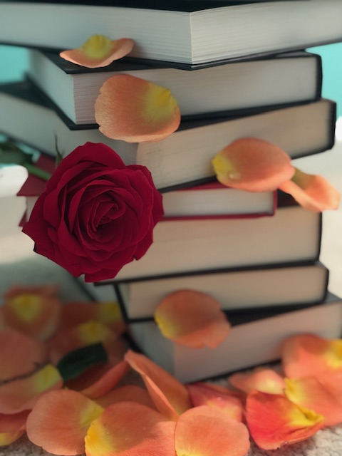

Dive into a world of magic with my prized Fantasy Collection! This set includes rare editions such as Caraval and Once Upon a Broken Heart by Stephanie Garber. You can also find the Lightlark series by Alex Aster as well as many more. Each book is in excellent condition, with some featuring special edition cover art. Perfect for collectors or anyone who loves to escape into enchanting realms.
My Romance Collection is a treasure trove of love stories that will tug at your heart strings. It includes timeless works like Pride and Prejudice by Jane Austen and modern gems like A Court of Thorns and Roses by Sarah J. Mass. These books, many of which are unique editions, have been lovingly cared for and are ready to bring joy to a new reader. The image below captures the essence of this collection with a single red rose resting on the stack, which is a symbol of passion within these pages.
Photo: Lindsay Long 2024
For the lifelong learner, my Educational Collection offers a wealth of knowledge. From textbooks on Herbal Medicine to guides on Design Fundamentals, these resources helped me excel in my studies. They're gently used, with some containing my personal notes in the margins, which is a bonus for anyone looking to deepen their understanding. Help me fund my tuition while investing in your own education!